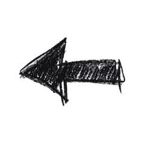

¿Toca renovar el DNI o el PASAPORTE en Getxo?
EuskeraTu foto perfecta y lista al momento
Fotos de DNI y pasaporte con calidad profesional y validación
biométrica.
¡Sin cita previa ni esperas! Y llevate nada más que 9,50€, en el
bolsillo.
Junto a la estación de metro de Algorta, en la plaza de Villamonte y a solo dos minutos de la oficina de renovación del DNI en Getxo.
¿CÓMO FUNCIONA?
Entras, te haces la foto y listoLlegas

Estamos junto a la estación de Algorta, en la plaza Villamonte. Nos encontrarás nada más llegar en metro o autobús.
Te hacemos la foto

Utilizamos cámara profesional e iluminación de estudio para conseguir una fotografía nítida, natural y favorecedora.
La comprobamos
Utilizamos software biométrico especializado para verificar que la fotografía cumple los requisitos técnicos oficiales.
Te la llevas
Tus fotos están listas al instante. Después, solo tienes que caminar dos minutos hasta la oficina del DNI.